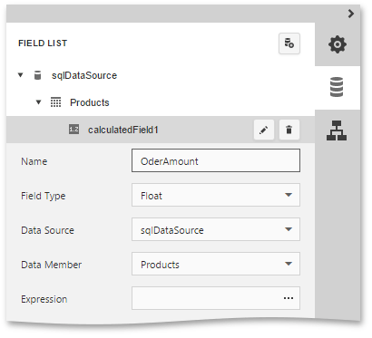
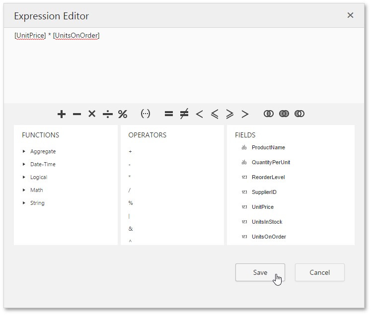
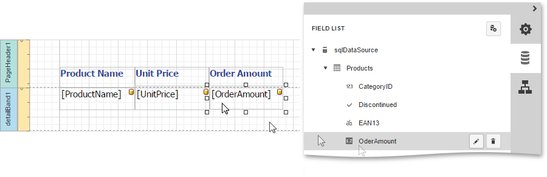
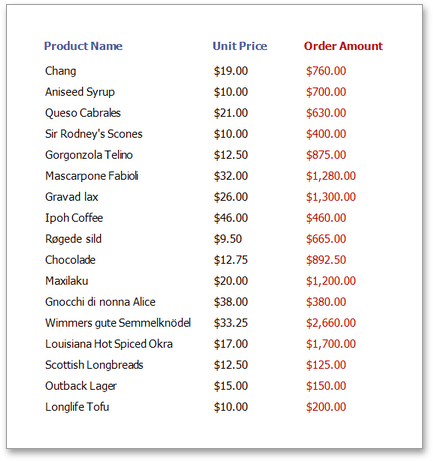

Calculated Fields
This document describes how calculated fields can be used in your report. The main purpose of calculated fields is to perform pre-calculations (of virtually any level of complexity) over data fields based on a specific expression. So, using calculated fields allows you to apply complex expressions to one or more data fields that are obtained from your report's underlying data source.
In the Web Report Designer, a calculated field is similar to an ordinary data field (e.g., you can bind controls to it, and group, sort and filter your report against it).
To add a calculated field to your report, follow the instructions below.
Create a calculated field. To do this, switch to the Field List panel, click a data table and the click Add calculated field button.

To specify calculated field properties, click the Edit button (the 'pencil' icon
 ) for this calculated field. Among its options, make sure to change the Field Type property to an appropriate value.
) for this calculated field. Among its options, make sure to change the Field Type property to an appropriate value.
The value of a calculated field is obtained by evaluating its expression, which is specified by its Expression property. To create an expression for the calculated field, click the ellipsis button for the Expression property. Then, construct the required expression in the invoked Expression Editor.

To add a data field or report parameter to this expression, double-click the required name in the Fields list. A data field is inserted into the expression's text using its name in [square brackets], and parameters are inserted using the "Parameters." prefix before their names.
To add operators between field names, use the toolbar or Operators list. To perform different string, date-time, logical, and math operations over data, use standard functions from the Functions list.
Now, you can use the calculated field as a typical data field, e.g., drop it from the Field List to create a Label control bound to this field, or even group, sort and filter your report against it.
For example, create the following report.

The report with a calculated field is now ready. Switch your report to the Preview mode and view the result.
